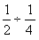
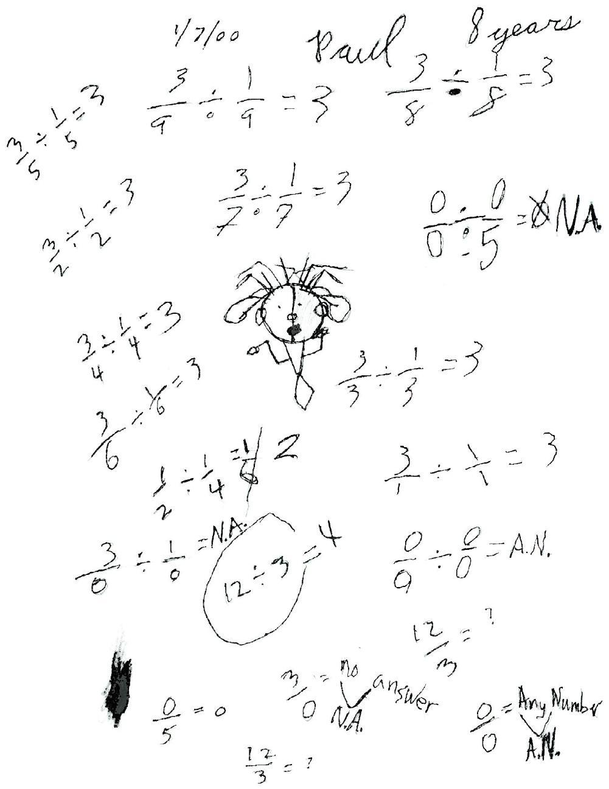

Paul, a 3rd grader, divides by ZERO
I started Paul with the problem 
(See the copy of the page from his book below. This problem is down near his art work), which means how many quarters make one-half? Like in the problem 12 divided by 3 = ? Or what times 3 makes 12? We worked our way up the page, and he caught on to the pattern. I asked him to make up some problems like these. This is where the interesting part comes in! He starts to divide by zero!

We discussed 3/0 = ? as what times 0 = 3? And he said there is no number times 0 = 3. His notation was N.A. for no answer. The we talked about 0/5 = ? What times 5 = 0? and of course this was 0. What about 0/0=? and he came up with the fact that any number times 0 = 0. So 0/0= Any Number (A.N.); this is equivalent to AN x 0 = 0.